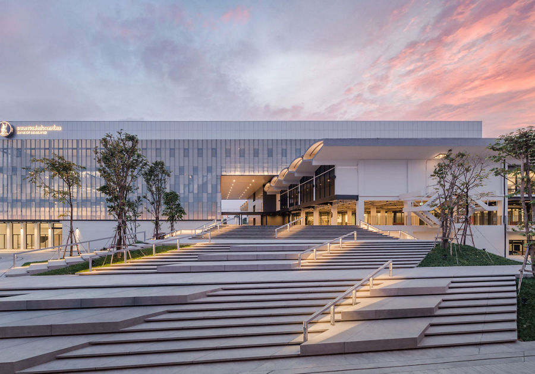

ห้องสมุดวิลเลียม วอร์เรน

ห้องสมุดวิลเลียม วอร์เรน
เป็นห้องสมุดเฉพาะทางที่ดำเนินงานโดย มูลนิธิเจมส์ เอช ดับเบิลยู ทอมป์สัน ตั้งอยู่ในบริเวณ บ้านจิม ทอมป์สัน กรุงเทพมหานคร ห้องสมุดแห่งนี้มีพันธกิจในการให้บริการข้อมูลที่เกี่ยวกับศิลปวัฒนธรรม สถาปัตยกรรม และผ้าไหมไทย แก่นักเรียน นักศึกษา และบุคคลทั่วไปทั้งชาวไทยและชาวต่างชาติ
การเดินทาง
ทางเรือ: สถานีรถไฟฟ้าบีทีเอส (BTS) สถานีสนามกีฬาแห่งชาติ
โดยรถประจำทาง: สายรถเมล์ที่ผ่าน ได้แก่ สาย 15, 47, 73, 79
ข้อมูลเพิ่มเติม
ที่ตั้ง: Jim Thompson Art Center Building, 2nd floor Soi Kasemsan2 Rd แขวงวังใหม่ เขตปทุมวัน กรุงเทพมหานคร 10330
เวลา:
- วันจันทร์-ศุกร์: 10:00 - 18:00 น. (ปิดวันหยุดราชการ)
ดูข้อมูล: https://www.jimthompsonartcenter.org/th/library?utm_source=chatgpt.com